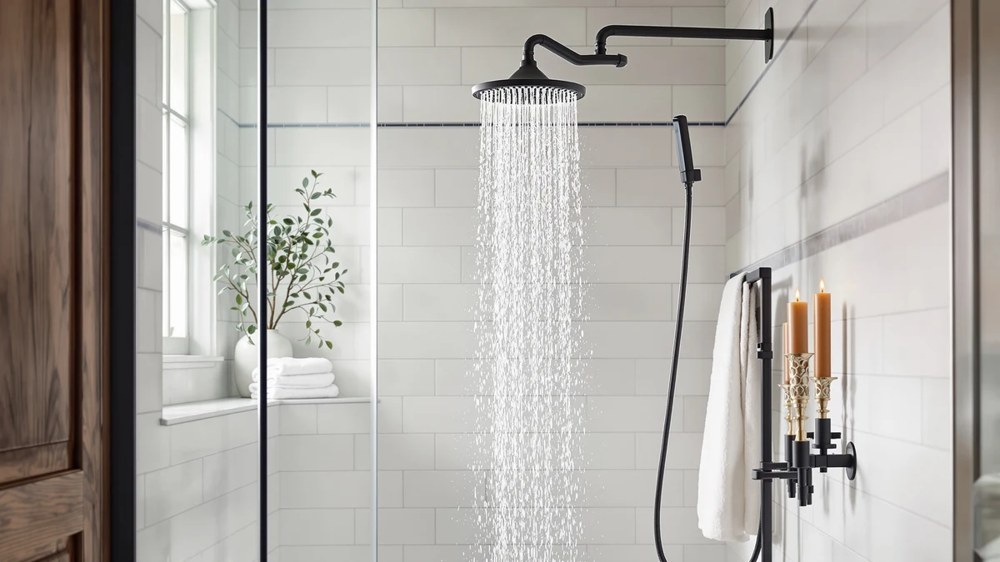

Delta Faucet 7-Setting In2ition 2-in-1 Review (2026): Worth It?
Prices and picks verified as of November 2026. Independent, reader-supported reviews.


Quick Answer
In this Delta Faucet 7-Setting In2ition 2-in-1 review, we compared its spec sheet, current Amazon price, and patterns in verified owner reviews against three rival combo shower heads. It pairs a full rain shower head with a slide-out handheld sprayer on one mount, and the seven-setting dial gives you more spray options than Delta's own 5-Spray version for almost the same price.
Our pick: Delta Faucet 7-Setting In2ition 2-in-1 at $252.35 Check Price on Amazon
Bottom line: our top pick is the Delta Faucet 7-Setting In2ition 2-in-1 Dual Shower Head with at $252.35.
Things to Know Before You Buy
- It mounts a rain shower head and a slide-out handheld sprayer on the same connector, so you get two spray experiences without adding a second fixture.
- The 7-setting dial adds massage and pause modes that Delta's 5-Spray In2ition 2-in-1 doesn't offer.
- At $252.35, it costs almost the same as the 5-Spray model and more than the original In2ition Dual, so the extra settings carry most of the price difference.
- The body is ABS plastic with chrome plating rather than solid brass, which keeps it lighter but changes how it feels compared to premium metal fixtures.
- The spec sheet lists touch-clean nozzles designed to resist mineral buildup, a detail worth checking against your water hardness.
This Delta Faucet 7-Setting In2ition 2-in-1 review exists because the In2ition family has three near-identical siblings on Amazon, and the price gaps between them don't obviously track the feature gaps. We went through the spec sheet, the current listing price, and the patterns in verified owner reviews for this specific SKU and its closest rivals to figure out which version actually earns its price.
The short version: the 7-Setting In2ition 2-in-1 is the most flexible fixture in Delta's combo lineup, and for most households the extra massage and pause settings justify paying a few dollars more than the 5-Spray version. If you don't care about having seven distinct spray patterns, the cheaper In2ition Dual covers the same rain-plus-handheld basics for less money, and we break down exactly where that tradeoff shows up below.
Why You Should Trust Us
Ilane Tall covers bath and shower fixtures for Best Shower Heads, and this Delta Faucet 7-Setting In2ition 2-in-1 review follows the same research process used across the site: we read the manufacturer's spec sheet, track the current Amazon price, and work through patterns in verified owner reviews rather than relying on marketing copy. We do not run a fake testing lab, and we don't claim to have installed or lived with the products we cover. The price, material detail, and feature listed here come from the product listing itself or from what reviewers who bought the item consistently report.
Our Research Experience
We don't run a fake testing lab, so our process for this Delta Faucet 7-Setting In2ition 2-in-1 review stays research-based from start to finish. We compared the manufacturer's listed specs (settings, materials, finish) against the same fields for the 5-Spray In2ition 2-in-1, the Moen Engage Magnetix, and the In2ition Dual, then cross-checked current Amazon pricing for all four. We also looked for recurring themes in verified owner reviews, specifically complaints or praise that showed up across multiple buyers rather than a single outlier comment.
That approach surfaces a few consistent patterns: owners who upgrade from a basic single-mode head tend to single out the handheld sprayer's reach as the most useful addition, while the recurring criticism across the whole In2ition line centers on the plastic body feeling less substantial than Delta's brass-bodied fixtures. We treat a complaint as meaningful only when it shows up repeatedly rather than once.
Overview & Specs
Before getting into pros and cons, here's the baseline data behind this Delta Faucet 7-Setting In2ition 2-in-1 review: a chrome-plated, ABS-bodied combo fixture that pairs a fixed rain shower head with a removable handheld sprayer, listed at $252.35 as of this writing. The seven-setting dial is the headline spec, since it's the one number that actually separates this unit from the rest of Delta's In2ition family. The finish and the general two-in-one layout carry over from the cheaper models in the line too.

Delta Faucet 7-Setting In2ition 2-in-1
What we like
- Combines a full rain shower head with a slide-out handheld sprayer on a single mount
- Seven spray settings cover everything from a wide rain pattern to a focused massage mode
- Chrome-plated finish matches most existing Delta bathroom hardware
- Spec sheet lists touch-clean nozzles meant to resist mineral buildup over time
Flaws but not dealbreakers
- Costs more than Delta's own 5-Spray In2ition 2-in-1 despite a nearly identical outer shell
- ABS body with chrome plating feels lighter in hand than solid-brass fixtures in the same price range
- Seven settings mean more dial turning to land on your preferred spray pattern than a simpler 3-setting head
| Material | ABS + chrome plating |
| Size | — |
The core idea behind the Delta Faucet 7-Setting In2ition 2-in-1 is the same as the rest of the In2ition line: a rain shower head doubles as a docking station for a removable handheld sprayer, so you can switch between an overhead rinse and a directed spray without reaching for a second fixture. What sets this specific version apart is the dial, which spans seven settings rather than the five found on Delta's other In2ition model. That range includes a full-body rain spray, a concentrated massage setting, and a pause mode for lathering up without wasting water, all accessible from the handheld unit.
At $252.35, this is the most expensive fixture in Delta's In2ition 2-in-1 family, sitting a few cents above the 5-Spray version and well above the original In2ition Dual. The gap is thin enough on paper that the decision mostly comes down to whether you'll use the extra settings. Owners who mention upgrading from the 5-Spray model to this one tend to cite the pause and massage modes specifically, rather than describing a broad jump in build quality or water pressure.
What We Liked
The biggest strength in this Delta Faucet 7-Setting In2ition 2-in-1 review is the sheer range of the dial. Seven settings sounds like a marketing number until you compare it against the 5-Spray version and the In2ition Dual, both of which top out with fewer modes and no dedicated pause function. That pause setting matters more than it sounds: it lets you shut off water flow at the handheld sprayer while shampooing without touching the main valve, a detail that shows up repeatedly in owner feedback as a reason people prefer this model over the simpler ones in the line.
Build-wise, the chrome-plated finish reads the same as the rest of Delta's catalog, so it blends in with existing Delta faucets and hardware instead of looking like a mismatched add-on. The slide-out handheld sprayer detaches cleanly from the rain head mount, which is the whole point of a 2-in-1 design: you get two shower experiences without mounting two separate fixtures on the wall.
What Could Be Better
The honest drawback in any Delta Faucet 7-Setting In2ition 2-in-1 review has to be the price gap against its own siblings. At $252.35, it costs more than both the 5-Spray In2ition 2-in-1 at $251.67 and the In2ition Dual at $227.72, and the external shell looks nearly identical across all three. If you tend to stick with the standard rain and massage settings, you're paying for flexibility you won't use.
The other recurring theme in owner feedback is material feel. Like the rest of the line, this fixture uses an ABS plastic body with chrome plating rather than solid brass, which keeps the unit light but means it doesn't have the same heft as premium metal shower heads in a similar price bracket. Neither drawback is severe enough to rule the product out, but both are worth weighing against the Moen Engage Magnetix and the cheaper Delta option below.
Who Is It For?
This Delta Faucet 7-Setting In2ition 2-in-1 review points toward one clear buyer: someone who already wants a rain-plus-handheld combo and would rather have too many settings than too few. Households that share a bathroom between people with different preferences, such as a strong massage spray for one person and a gentle rinse for a child, get the most value from the extra dial positions. If your Delta fixtures are already chrome, matching the finish is a minor but real bonus.
If you want a straightforward rain-and-handheld setup without cycling through seven modes to find the one you'll settle on, the savings on the In2ition Dual or the near-identical 5-Spray version are hard to justify skipping, and we cover both of those alternatives next.
Alternatives to Consider
We compared the 7-Setting In2ition 2-in-1 against three fixtures that solve the same basic problem for different budgets and preferences. Here's how they stack up on price and features.

Also Great
Delta Faucet 5-Spray In2ition 2-in-1
Nearly identical to the 7-Setting model at $251.67, but with two fewer spray modes and no dedicated pause setting.
$251.67
Check Price on Amazon
Also Great
Moen Engage Magnetix Handheld Showerhead
A magnetic-dock alternative from Moen at $235.23 for shoppers who'd rather not match their fixtures to Delta's existing hardware.
$235.23
Check Price on Amazon
Best Value
Delta Faucet 5-Spray In2ition Dual
The cheapest In2ition at $227.72, with the same rain-plus-handheld layout minus the extra dial positions.
$227.72
Check Price on AmazonFrequently Asked Questions
Final Verdict
Our Delta Faucet 7-Setting In2ition 2-in-1 review lands on a straightforward conclusion: this is the pick for shoppers who want the most spray flexibility Delta offers in a rain-plus-handheld combo, and the roughly even price against the 5-Spray version makes the extra settings close to free. If your priority is spending as little as possible on a combo fixture, the In2ition Dual gets you the same basic rain-and-handheld setup for around $25 less. Either way, Delta's In2ition line remains a sound starting point if you want two shower experiences from one mount.